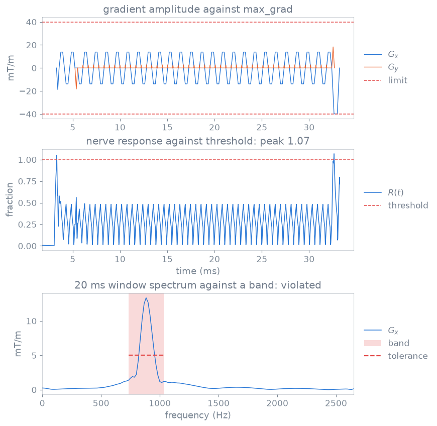

Safety checks#
TL;DR
Each check reads the gradients and RF as they are played and compares them with a limit.
PNS, mechanical resonance, sound pressure and SAR need scanner data no
.seqfile holds.A passing check does not establish that a sequence is safe to run on a scanner or on a subject.
An oblique slice puts two logical axes on one gradient coil, and an
echo-planar train can drive the coil at one of its mechanical resonances. You
find out before the scanner does by running pypulseqpp.safety on the
sequence your function returns, with the scanner’s limits and models, as in
lesson 7 of the Course.
Capabilities#
Checks gradient amplitude and slew rate per axis, after each block’s rotation.
Show code and tests
Code:
check_max_grad(),check_max_slew(). Tests: a gradient stronger than the scanner allows is refused; a rotated sequence is weighed on the axes it plays (test_safety.py).Reports the largest simultaneous vector amplitude, which a rotation can put on one axis.
Show code and tests
Code: the report’s
vector. Tests: the vector peak is what a rotation could put on one axis; the vector peak is taken where the axes slew at once (test_safety.py).Checks every block boundary for a gradient step, and that every axis ends at zero.
Show code and tests
Code:
check_grad_continuity(). Tests: a gradient that starts where the last did not end is a jump; a sequence that leaves a gradient on has not ramped down (test_safety.py).Checks against another scanner’s limits, derated or capped.
Show code and tests
Code:
system=,apply_system_derates(),cap_system(). Test: a sequence can be weighed against another scanner (test_safety.py).Estimates PNS with a chronaxie or SAFE nerve model, over the whole sequence.
Show code and tests
Code:
check_pns(),ChronaxieModel,read_safe_model(). Tests: a rectangular slew follows the strength-duration curve; the SAFE response is upstream’s; a response over threshold is refused (test_pns.py).Turns the gradients to the prescription after each block’s own rotation.
Show code and tests
Code:
rotation=ofcheck_pns(),check_mech_resonance()andcheck_spl();TransformFOVfor the others. Test: the prescription is turned after the block’s own rotation (test_pns.py,test_mech_resonance.py).Compares the windowed gradient spectrum with the coil’s forbidden bands.
Show code and tests
Code:
check_mech_resonance(),ForbiddenBand,read_forbidden_bands(),mech_resonance_spectrum(). Tests: a sustained sinusoid reads its own amplitude; a band guards only the axis it names; the spectrum reads the amplitude the check reports (test_mech_resonance.py).Holds the loudest repetition, played without end, to 140 dB peak and 99 dB(A) average.
Show code and tests
Code:
check_spl(),read_acoustic_response(). Tests: the repetition of most gradient energy is evaluated; a level above its limit fails the check (test_acoustic.py).Estimates local and global SAR per repetition from VOPs, single-channel or pTx.
Show code and tests
Code:
check_sar(),VopModel,read_vops(). Tests: the worst repetition decides; SAR goes with the square of the drive; the global SAR is the largest over the body models (test_sar.py).Applies the VOP file’s safety factor to local SAR only.
Show code and tests
Code:
VopModel.metadata,safety_factor=. Test: the safety factor multiplies local SAR and its ratio, not global (test_sar.py).Expresses SAR as a ratio to a reference pulse, which needs no drive calibration.
Show code and tests
Code:
reference=ofcheck_sar(). Tests: the ratios do not depend on the drive calibration; the global ratio is taken body by body (test_sar.py).Reads the VOP files mariepy writes, and MARIE’s and MATLAB’s layouts.
Show code and tests
Code:
read_vops(). Tests: a one-body npz file as mariepy writes it is read; a mat file stack is read batch first (test_sar.py).Plays the gradients as audio, as MATLAB Pulseq’s
sounddoes.Show code and tests
Code:
sound(). Test: sound follows MATLAB Pulseq’s definition (test_sound.py).
Division of responsibility#
Its own checks before the scan, and hardware monitoring during it. Pulserver runs the checks on this page on every design, with the limits the scanner sends.
SAR, RF coil heating and gradient heating, by the vendor’s routines.
check_sar()is an estimate under the VOPs and drive you supply; on a scanner, VOP ratios are the input the vendor’s routine needs for pTx.Resampling onto its own rasters. pypulseqpp checks timing on the rasters the sequence declares (Pulseq file format).
Method#

Three checks on one echo-planar shot, each a played quantity against its
limit: the gradient amplitude against max_grad, the nerve response against
its threshold, and a 20 ms window’s spectrum against a forbidden band placed
on the train’s fundamental.#
Per-axis limits and rotation#
max_grad and max_slew are per-axis limits. The axes peak at different
times, so the vector peak is below the root-sum-square of the axis peaks; but
a rotation keeps the vector and moves it between axes. A design with two axes
at max_grad at once exceeds it at some oblique prescriptions.
Nerve response and gradient spectra#
A short ramp needs a larger slew rate to stimulate, \(S(\tau) = S_{\mathrm{rh}}(1 + c/\tau)\), and the response depends on the slew history, so the whole sequence is evaluated from rest. A readout train alternating at echo spacing \(\Delta t\) concentrates its gradient spectrum at \(1/(2\,\Delta t)\): for EPI, the echo spacing is what a forbidden band constrains.
Reference-pulse SAR ratios#
The drive per Hz of \(B_1\) is a calibration you rarely have. A pulse the scanner knows, held at the global limit, fixes it: SAR as a ratio to that pulse, played under the same VOPs, is independent of the calibration.
The full rules, units and formulas are in Safety-check computations.
Examples#
7. Hardware and safety checks: every check on the radial MPRAGE, with its PNS trace and gradient spectrum.
Gradient, PNS, acoustic and SAR checks: the functions and their reports.